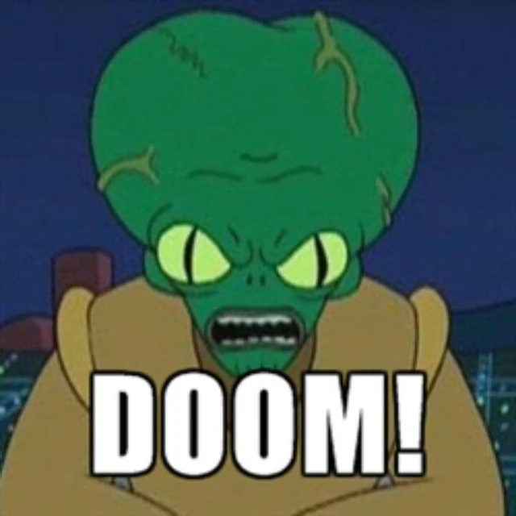

I guess I'm back to blogging since it's not cool anymore and more causally, Twitter has blocked me because I won't give them my palm biometrics.

Everyone is talking about AI of course and will continue to for some time.

For the past couple of years in tech circles, it has of course been the topic of almost every discussion.

But we all have differing views on it. 

A few years back, we had a guest speaker at a CTO gathering who proclaimed:

"AI will not take your jobs, but the people who use it will take the jobs of those who don't"

And I think that's been directionally right and will remain so. 

Similarly, one view I have is that AI itself is not going to destroy humanity. 

AI will not destroy humanity, but the people who use it malicously will kill people.

You read the "AI Safety" people and they all espouse similar "Going to kill us" mentalities.

Why? Because they want people to be afraid. Why? Because they want power over other people.

Ask them for the science behind their predicted doom percentages and they all boil down to, source: just trust me bro.

Just more doomsaying prophecies in a long line of doomers spreading doom for millenia. Yet, here we are and the world hasn't ended yet.



Doomers and their quest for attention and power personally remind me of the formation of relgiious belief systems.

Notice that your fellow primates exhibit fear of some things. 

Come up with rationale for why those things happen based on a set of rules and logic you define.

Prophesize you are the one who knows the true meaning of things and it is you should influence decisions over humankind to spare us of such fate.

In some ways, I respect the true doomers more. At least they aren't out there making stuff up to lord it over others.

No, they're either busy prepping or busy enjoying life.

They may be wrong, but they're productive about it and leave control over me and others out of their schemes.

But I digress.

At one of our CTO dinners, one of the main topics was what was going to happen from the lack of junior software engineers.

Everyone was positing we'd end up in a situation of only seniors and they'd eventually die out leaving no one to take over.

I argued that we'd instead hit an inflection point, where the AI "natives" would outpace seniors because they'd dove head first into it and became better.

Ultimately, it will be a bit of both. But the seniors who don't like the AI natives taking their jobs will guard their domains jealously.

That's why I like this move from Stripe to development a truly useful organizational knowledge platform: https://stripe.dev/blog/meet-stripes-knowledge-ai-platform

Sure, lots of companies have wikis and Confluence pages and such, but rarely is the true organizational knowledge at everyone's fingertips.

With their Kai system though, it is. Breaking down silos at its best.

The productive people can quickly incporate this to their advantage, while the jealous secret guarders are left exposed and defenseless.

Is that bad? Am I supposed to feel pity for the person who has been hoarding knowledge to guard their job security?

I don't begrudge them, people act out of fear all the time.

A truly well functioning organization is absent of fear though. Fear is nowhere near as great a motivator as hope, (or laughter if you ask Monster's Inc).

That's why espouse techno-optimism, not because it solves all problems nor does it establish equity or equality across all people.

But technological advances have a success record on epoch timescales of raising the quality of life for the average human.

I'm sure there was someone dooming about fire when it was first harnessed, that'd we end up in some kind of hell on Earth having unleashed our own undoing.

It's yet to happen though and perhaps it never will. Perhaps, instead, the stars.
